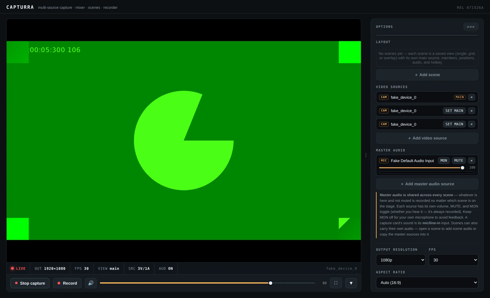
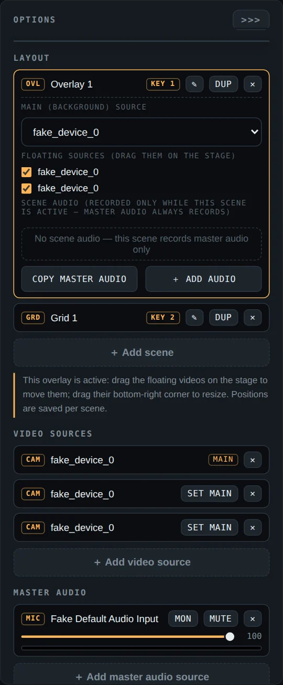
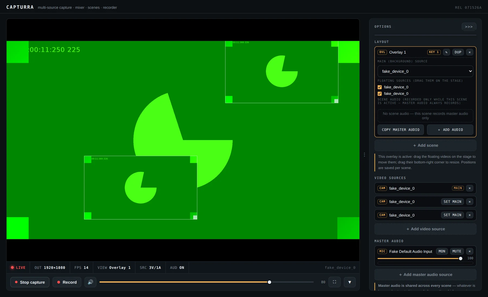
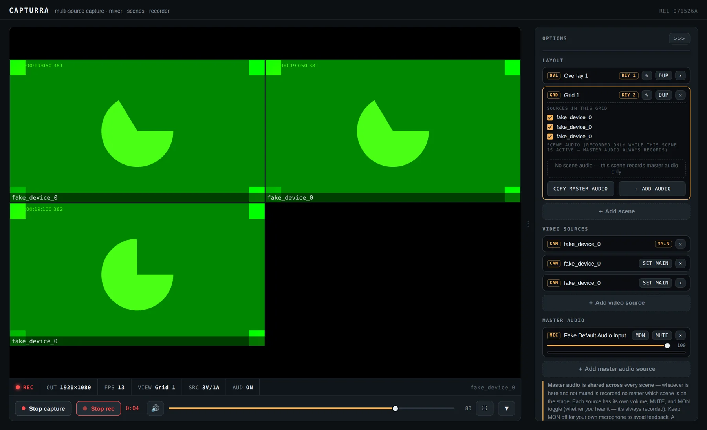
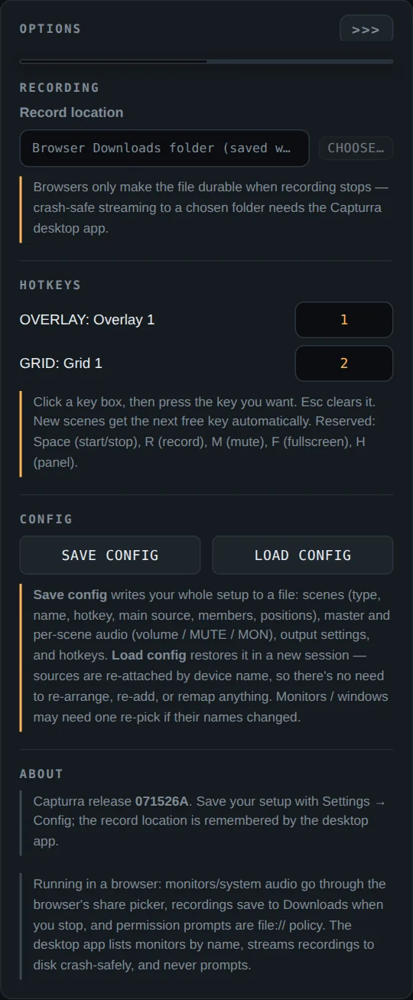

playy.online — desktop software · windows · free & open source
Every source. One deck.
Nothing lost.
Capturra is a multi-source capture monitor, audio mixer, scene system, and crash-safe recorder for Windows. Cameras, capture cards, monitors, and app windows — mixed live, switched with hotkeys, and written to disk every single second, so a crash mid-recording costs you one second, not the whole take.

What it does
everything below ships in the free downloadScene system
Build unlimited single, grid, and overlay scenes — each with its own main source, members, and picture-in-picture positions you drag right on the stage. Duplicate any scene to make variants in one click.
Master + scene audio NEW
Master audio follows you through every scene — switch views mid-recording and the mix carries straight through. On top of it, each scene can carry its own sources, or a one-click copy of the master set with independent volume, MUTE, and MON.
Crash-safe recording
The recording streams to your folder every second while it runs. App freezes, PC blue-screens, power cut — the file already contains everything up to the last second. Nothing to recover. It's simply there.
Save & load configs NEW
Your whole setup — scenes, positions, audio levels, hotkeys, output settings — saved to one file. Next session, load it and everything re-attaches by device name. No re-arranging, no re-adding, no remapping.
Live hotkeys
Every scene gets a key automatically — jump between views mid-recording without touching the mouse. Remap anything; the recording follows whatever is on the stage.
A real broadcast deck
Up to 8 simultaneous video sources, per-source VU meters, MON/MUTE that behave the way an engineer expects, tally light, measured FPS — in a resizable panel you drag to exactly the width you want.
the reason it exists
Your recording survives the crash.
Most recorders keep the file in memory and write it when you press stop — so a crash at minute 59 erases minutes 0 through 59. Capturra writes the recording to disk in one-second chunks, continuously, from the moment you press record.
If Capturra dies, if Windows dies, if the power dies — you open your recordings folder and the file is there, playable, complete up to the last second before the lights went out.
How it's used
real screenshots — this is the actual appSTEP 01
Add your sources
Press ＋ and pick from cameras, capture cards, monitors, and app windows —
listed by name, no guessing. Then load the Master audio mixer with your mic,
the capture card's line-in, or full system audio. Every source gets its own volume, MUTE,
MON toggle, and a live meter.

STEP 02
Build scenes, drag them into place
Add a single, grid, or overlay scene. In an overlay, floating videos drag and resize right on the stage — positions are saved per scene, so a "facecam top-right" scene and a "facecam bottom-left" scene live side by side. Each scene can carry its own audio on top of the master mix.

STEP 03
Record, and switch views live
Press R and the tally goes red. Hit 1, 2,
3 to cut between your scenes while recording — the file captures
exactly what's on the stage, master audio riding along the whole way. The status bar
shows real measured FPS, not a wish.

STEP 04
Save the whole setup
Settings → Config → SAVE CONFIG writes everything to one file. Tomorrow, load it and your scenes, positions, hotkeys, and audio levels come back — sources re-attach by device name automatically. Set your recordings folder once and it's remembered too.

Download
v071526a · free · MITStandalone — just run it
One portable .exe. No installer, no admin rights, no Node.js, no prompts. Copy it to any Windows PC and double-click.
- Zero setup — devices are listed by name the moment it opens
- Crash-safe recording streamed to a folder you choose
- True system-audio capture (Windows loopback)
Source — build it yourself
The full project folder. Run it with npm start, build your own exe with the included one-click setup.bat, or open capturra.html straight in a browser.
- MIT licensed — read it, modify it, ship it
- Includes the browser version (Chrome / Edge / Brave / Firefox)
- setup.bat builds the standalone exe with live progress
Honesty corner: this is an unsigned indie build, so Windows SmartScreen may warn the first time you run it — choose More info → Run anyway. If you'd rather not take our word for it, the source is right there in the second download: read it, then build the exe yourself with setup.bat. Nothing leaves your PC — there is no server, no account, and no network code in the app at all.
We're not a company trying to sell you something — this is the something. Capturra is built and maintained by the same one-person studio behind everything else on playy.online. It's free because indie tools should exist, MIT-licensed because you should own your tools, and telemetry-free because your recordings are none of our business. If it saves one of your takes from a crash, tell a friend — that's the whole marketing budget.
— playy.online, independent web studio · release v071526a · July 2026